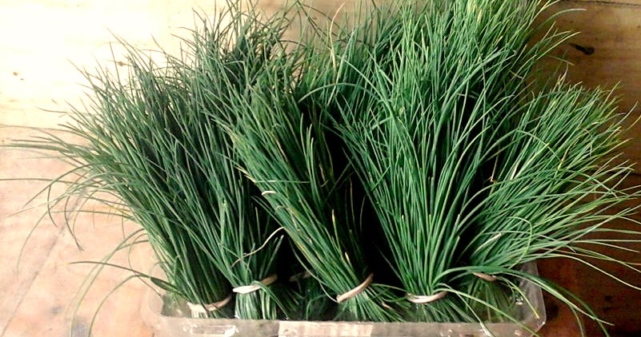
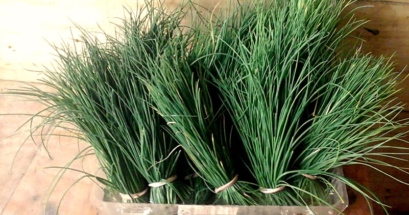

quienes somos
Somos un grupo de productores orgánicos que nos unimos para formar una cooperativa de trabajo, a fin de ofrecer productos de calidad, frescos y saludables.

conoce más
nuestros productos
Son cultivados en campos con superficies mayores, distribuidas en diferentes sectores de nuestra granja biodinámica, y en diferentes regiones del país, en base a especies y variedades cuyas particularidades alimentarias y aportes al suelo nos permiten ir haciendo rotaciones en función de sus ciclos. Los alimentos frescos se cosechan, clasifican y embalan semanalmente en bolsas y envases retornables. 

cotizar
nuestro personal
Nosotros somos agricultores de mediano porte que nos comprometimos a ofrecer servicio, capacitación y trabajo. Trabajamos con grupos de agricultores de pequeño porte y Familias Asociadas al proyecto.

conoce más